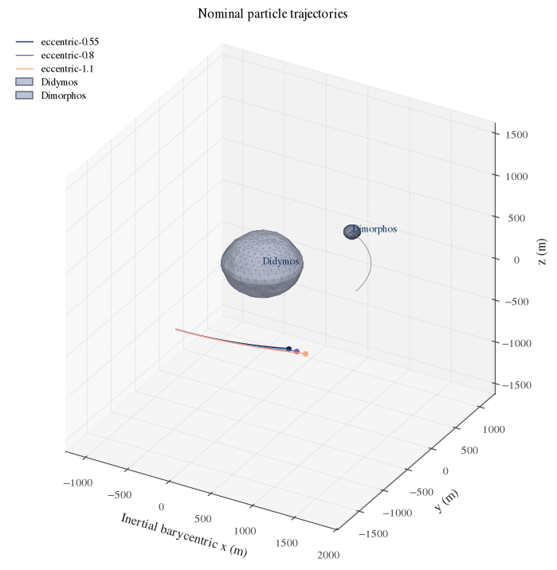
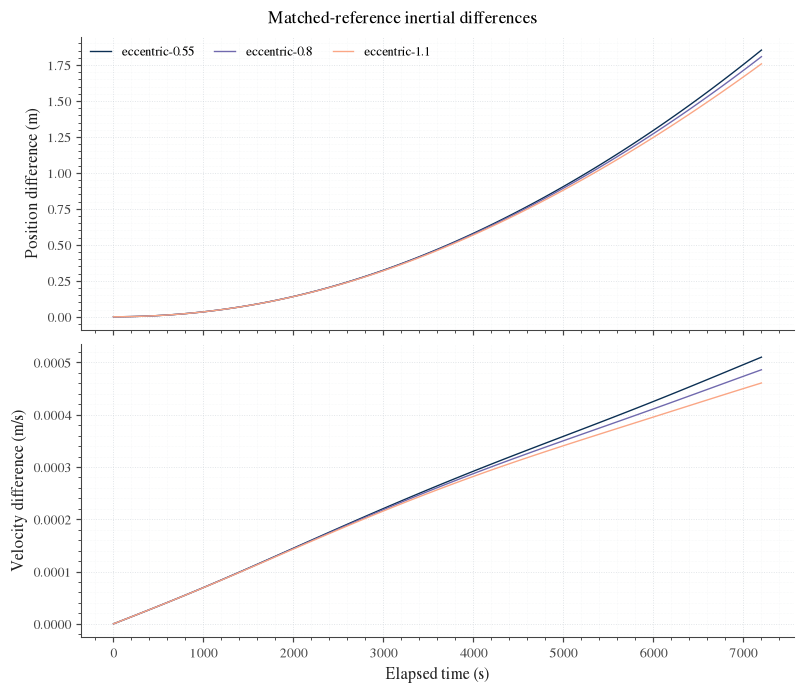
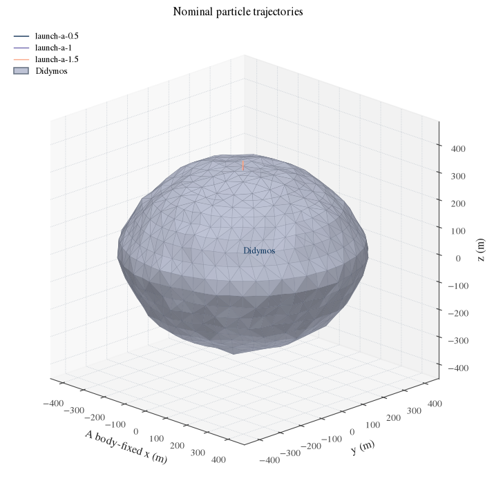
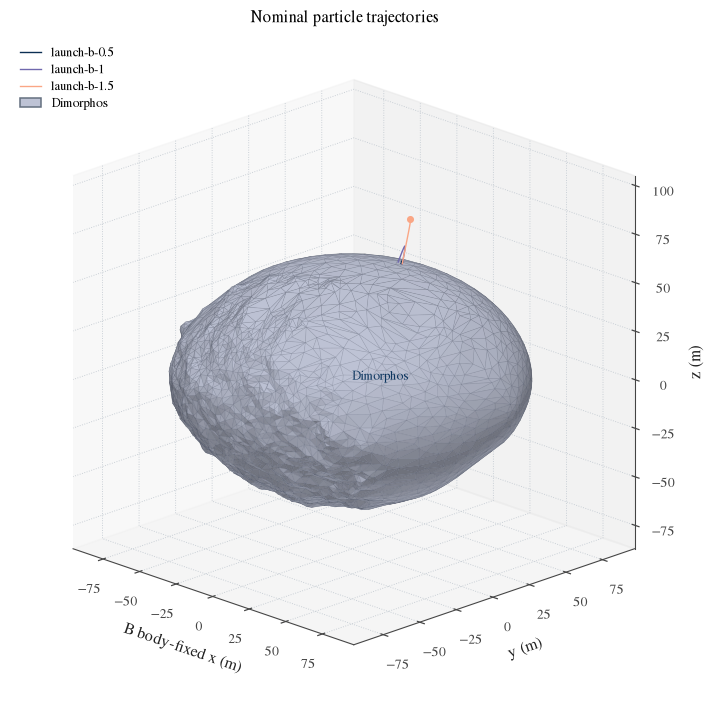
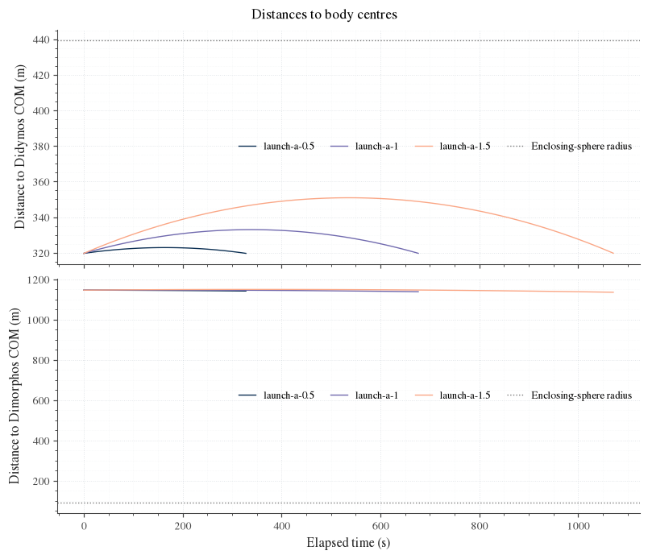

Particle trajectories
basco.particles propagates massless particles around the binary: ejecta, boulders, anything
small enough not to move the two bodies. The bodies follow the full two-body equations with
Hou's mutual gravity. Each particle feels both bodies and, optionally, the Sun. Particles do
not feel each other, and a particle's propagation ends when it reaches a surface; there is no
bouncing.
How the particle simulation works follows one particle through the code, step by step. This chapter is the reference for the choices.
Run an example
source tools/activate
python examples/particles/1_launch_from_surface.py
The six particle examples start from a launch of five particles and go up to a study of several hundred from a CSV file.
Write a short runner
from basco import particles as bp
environment = bp.didymos_environment(state="AC2")
site = environment.site("Dimorphos", latitude_deg=0.0, longitude_deg=180.0)
initial_conditions = bp.read_initial_conditions("data/milani_bed1/dimorphos.csv")
trajectories = bp.propagate(
environment, initial_conditions, site=site, duration_s=24 * 3600, workers=8
)
trajectories.save("results/my_trajectories")
impacting = trajectories.impacting("Dimorphos")
bp.plot_trajectories(impacting, frame="Dimorphos", file="trajectories.png")
bp.plot_impact_map(impacting, file="impact_map.png")
The table of initial conditions has one row per particle: position x_m, y_m, z_m and
velocity vx_m_s, vy_m_s, vz_m_s. It is given in the frame you name when propagating:
site=site (x east, y north, z up, velocities relative to the ground), body="Dimorphos"
(that body's fixed frame), or neither (the inertial frame).
Select particle gravity
didymos_environment(gravity=...) chooses the gravity of each body on a particle. This never
changes the mutual gravity that moves the two bodies.
gravity= |
Model | Where it is valid |
|---|---|---|
"polyhedral" (default) |
PolyhedralField: the constant-density polyhedron of the shape model (Werner and Scheeres) | Everywhere outside the surface |
"hou" |
HouParticleField: the series used for the binary | Outside the body's Brillouin sphere only |
"hou_no_brillouin_check" |
HouFieldWithoutBrillouinCheck: the same series evaluated inside that sphere too | Not guaranteed inside; for comparisons |
"point" |
PointMassField | Everywhere |
The Brillouin sphere of a body is the smallest sphere about its centre of mass that contains it. A series in powers of 1/r converges only outside it, so a particle launched from the surface needs the polyhedral model. A higher order of the series does not change that.
6_compare_gravity_models.py propagates the same particles under two models.
Add the Sun and radiation pressure
from basco import particles as bp
sun = bp.SolarForces(bp.FixedSun([1.5 * bp.AU_M, 0.0, 0.0]))
environment = bp.didymos_environment(state="AC2", sun=sun, shadow="sphere")
FixedSun holds the Sun at one position relative to the barycentre, which is adequate for a
short propagation. TabulatedSun interpolates positions you supply and refuses times outside
its table.
- Solar gravity acts on a particle relative to the barycentre: the barycentre itself falls
toward the Sun, so only the difference matters.
perturb_binaryapplies the same difference to the binary's orbit, andbinary_torquesadds the Sun's gravity-gradient torque on each body. - Radiation pressure pushes a particle away from the Sun in proportion to its area-to-mass
ratio and its reflectivity, and falls off with the square of the distance. Give them as
columns
area_to_mass_m2_kgandreflectivityof the table of initial conditions. A ratio of zero means no radiation pressure. shadowis"none","sphere"(a body shadows as its Brillouin sphere) or"mesh"(a ray toward the Sun is tested against both shapes). The Sun is a point; there is no penumbra.
Radiation pressure on the two bodies is not modelled.
How a propagation ends
The propagator integrates with DOP853, an adaptive eighth-order Runge-Kutta method, and watches the signed distance from each particle to each surface. When that distance changes sign during a step, the crossing is located inside the step and the particle is terminated there. The others continue.
trajectories.outcome |
Meaning |
|---|---|
"impact" |
It reached a body's surface; impact_body names the body |
"in_orbit" |
No impact by the final time, and bound to the binary |
"escape" |
No impact by the final time, and unbound: positive two-body energy about the barycentre |
"domain_exit" |
It entered a Brillouin sphere while the gravity model was the Hou series |
"In orbit" and "escape" describe the state at the final time. Neither proves what happens later.
Per particle, Trajectories also gives the time of flight, v1 (the speed at the initial
time, in the frame of the table), v2 (the speed at impact relative to the surface), the
impact point and, for a particle that returns to the body it started from, the distance from
the site.
Find the results
trajectories.save(folder) writes:
my_trajectories/
trajectories.npz # states, body-fixed positions, altitudes, outcomes, shapes
trajectories.json # body names, masses, settings, labels
initial_conditions.csv # the table that was propagated
table.csv # one row per particle: outcome, time of flight, v1, v2, impact point
bp.load_trajectories(folder) reads them back, so figures and animations can be redrawn
without propagating again
(4_redraw_saved_trajectories.py).
The figures are plot_trajectories, plot_impact_map, plot_altitude, plot_outcomes,
plot_impact_statistics and plot_summary, and animate writes a movie. Particles that
impact the body they started from are best drawn in that body's fixed frame, the others in the
rotating frame of the binary.
Detailed single-propagation tools
basco.validation.particle_studies holds older tools for looking closely at one propagation:
exports with checksums (export_particles),
osculating orbital elements, and the comparison of two gravity models at matching epochs.
They work on the output of propagate_particles,
the propagator underneath propagate, which integrates one binary with a few particles and
takes the gravity fields as objects. The figures below were made with them.
Example results
These figures were made on 2026-11-09 with the detailed single-propagation tools that are now
in basco.validation.particle_studies. They use the reference Didymos and Dimorphos shape
models, whose inertia integrals define the order-6 binary; the polyhedral gravity uses the
same shapes and masses. The binary starts from the Hera case AC2. The fixed Sun, the radiation
pressure, the initial states and the constant density are choices made for the demonstration.
Eccentric trajectories over two hours


The three particles reach 7200 s without impact. At the shared saved epochs, the largest Hou-versus-monopole position difference is 1.85346 m. This compares receiving-field representations under the same binary motion and solar assumptions; it is not an observational error estimate.
Launches from both surfaces


The Didymos particles reimpact at approximately 327.897, 676.510 and 1070.908 s. The slowest Dimorphos particle reimpacts at 555.322 s; two others reach the 1200 s forecast horizon. Those completions do not establish permanent escape. The target-only views retain the physical metre scale and omit the companion from the display, while its force remains in the propagated dynamics. Paths are drawn above facets for visibility. The Didymos hops rise at most about31m and have less than2m lateral spread, so their tracks overlap at the whole-body scale; the distance histories separate their motion.

Didymos launch animation · Dimorphos launch animation · Binary trajectory animation


Animations consume only the saved states and exact saved meshes. Their displayed time is physical elapsed seconds; playback rate is a presentation choice. No new propagation or interpolation is used to generate these frames.
Other diagnostic figures
Eccentric trajectories: a/e histories · a–e plane · body-centre distances · energy and angular momentum.


Didymos launch: a/e histories · a–e plane · body-centre distances · energy and angular momentum.


Dimorphos launch: a/e histories · a–e plane · body-centre distances · energy and angular momentum.


Validation and limits
Validation record · Design note · First example
Both records were written before the particle code was reorganized in November 2026 and use the names of that time.
The particle simulation computes trajectories without partial derivatives. The uncertainty of a trajectory is a separate calculation: see Particle and impact covariance. Polyhedral gravity here assumes constant density; the uncertainty of a shape or of a density is not propagated.